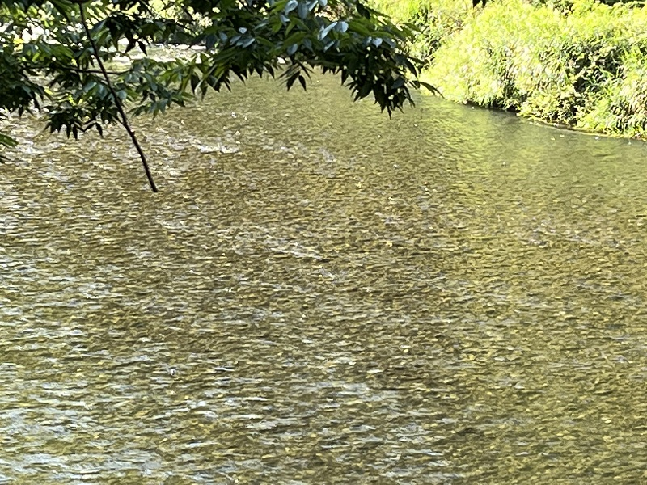

ポンセ: ピアノ三重奏曲
これはヴィラ゠ロボスをいろいろ漁っていて見つけたもので、近代の3人の作曲家（ブラジルのヴィラ゠ロボス、スペインのトゥリーナ、メキシコのポンセ）によるピアノ三重奏曲をベネズエラ出身（アメリカ在住）のトリオが演奏している。このあたりの国々の関係も調べれば興味深いのだろうが、あまり馴染みはない。ベネズエラといっても教育制度「エル・システマ」が有名なのを知っている程度だ。アルバムのラストに置かれたのがこのマヌエル・ポンセの三重奏曲。ポンセは『エストレリータ』が有名だがこれも普段あまり聴かない作曲家だ。『トリオ・ロマンティコ』という通称があり、その名の通りロマンティックで適度に情熱も感じられる良い曲だった。
Manuel Ponce: Piano Trio "Romántico"
Reverón Piano Trio
(2021)
各楽章には手慣れた感じで気分の変化がうまく付けられており、さらにどの楽章にもポンセならではの心に沁みる歌が含まれている。中でも第2楽章は『エストレリータ』を思わせる南国風で甘い旋律が溢れる緩徐楽章。時々長めの休止が入って、あたかもオペラで歌い手が移っていくような、独特の接続方法を取っている。ピアノのアルペジオを交えた伴奏音型が耳に残る。
平板な演奏だったらちょうど今の時期の残暑のようにベタベタと纏わりつくようになってしまいそうだが、その点このアルバムは爽やかで好感の持てるものだった。他の曲（特にヴィラ゠ロボスの『第1番』）もそれぞれに個性的。この三人は一見共通点があるようでいて単一の言葉で括るのは難しいかもしれない。強いて言えば皆ギターの分野で有名ということだろうか（ポンセはこの曲を書いた頃はまだセゴビアにめぐり合っておらず、ギターに傾倒してはいなかったようだが）。ともかく良い選曲だった。

(Sep. 23, 2023)